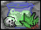
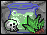

thegui
About the Interface
This is how I currently envision where StoneQuest's interface is going. I have only finished artwork for the player's inventory, the upgrade item window and the potion brewing window. You can see how they look within the context of the game here by clicking on the icons associated with the window.
Hovering over an icon will give you some information about what that icon is and what happens when you click on it. As I finish more artwork, I will update this interactive display.
I am always open to suggestions and helpful criticisms. If you feel an aspect of my interface is unclear or not user-friendly, please do not hesitate to email me here.
Inventory
Inspired by Diablo-esque games, StoneQuest's inventory has 24 item slots (shown in the lower half of the inventory), each of which holds exactly one non-stackable item. Additionally, the player has access to 10 equippable slots, which can be equipped with a specific type of weapon or piece of armor.
Item Upgrade
Every item in the game can be upgraded in some way or another; for example, weapons can be upgraded to increase their damage dealt. Upgrading an item requires at least 1 ingredient, and up to 6 different types of ingredients. The player's attributes will play some role in this area of the game; for example, a high accuracy level will increase the upgraded items' accuracy attribute bonus than a low accuracy level would.
Brewing Window
Potions and salves will play a vital role in StoneQuest. Their function will serve mainly as stat buffs, increasing or decreasing the player's attributes for a limited duration. This is not a new concept and many RGPs have an element much like Brewing (many refer to it as Alchemy, as an example).
But few RPGs make the effort-reward trade-off work for the player. These games provide the player with subpar potions whose value is noticeable, but not worth the effort it takes to craft them. This makes for a system that is neither fun nor useful, especially if players ignore it.
Ideally, potions in StoneQuest will be powerful, but not necessary.